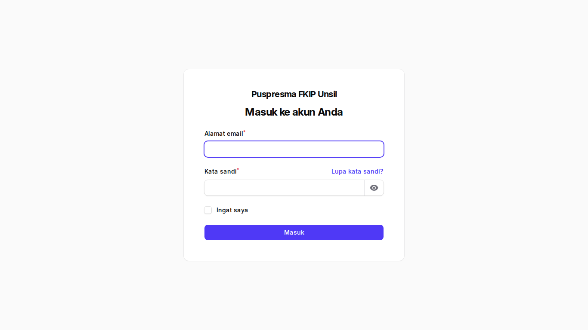
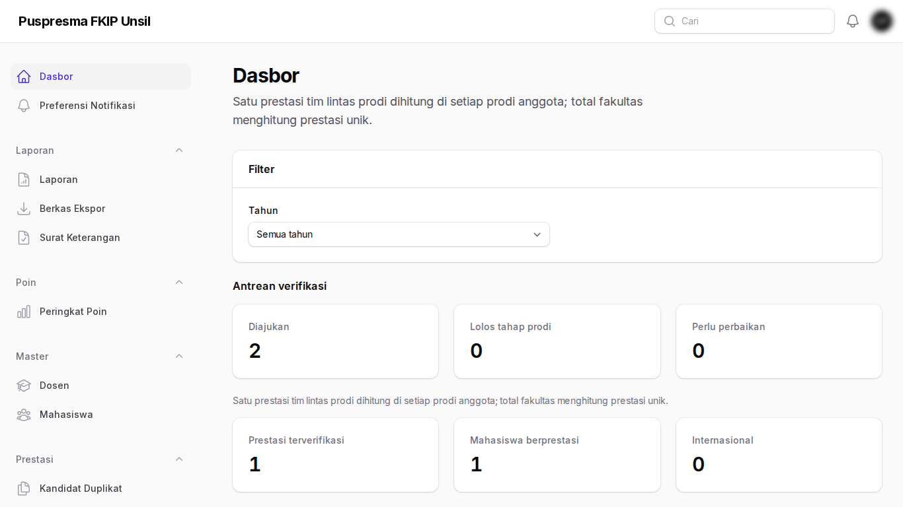
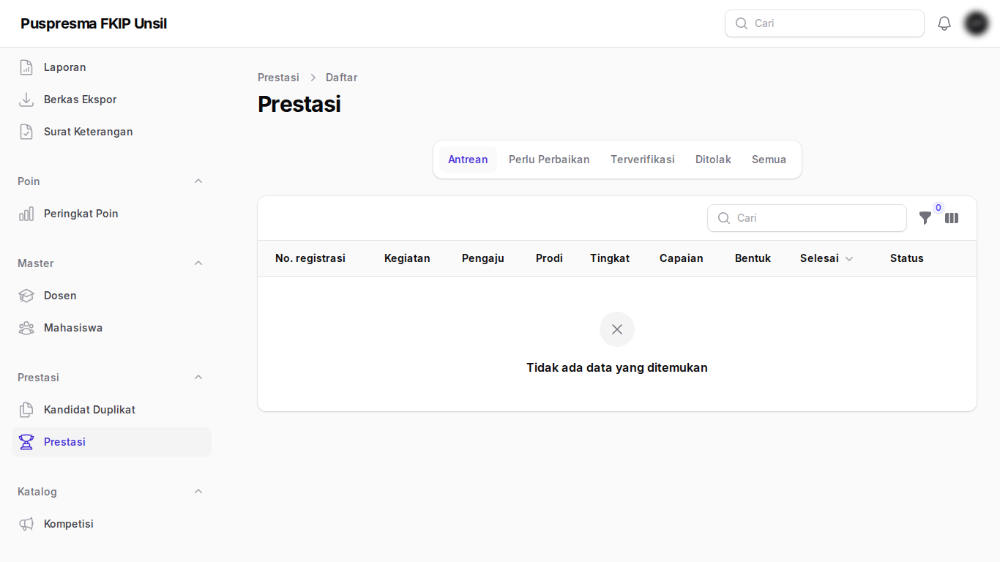
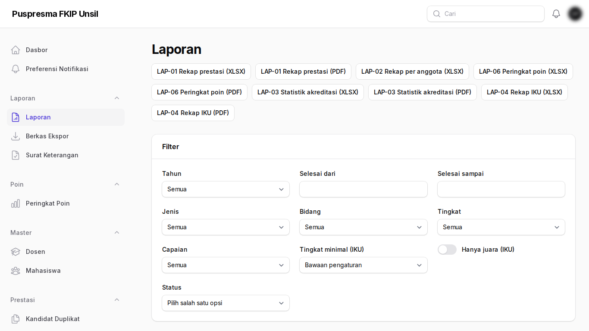

Panduan Admin Prodi
Tujuan
Menjalankan verifikasi tahap 1 untuk prestasi yang melibatkan prodi Anda dan memantau rekap serta laporan akreditasi prodi.
Cara masuk
Masuk di panel Admin dengan akun admin prodi; data otomatis dibatasi pada prodi Anda.
Langkah-langkah
- Halaman masuk. Masuk di panel admin dengan akun admin prodi.

Halaman masuk - Dasbor prodi. Statistik prodi Anda; gunakan filter tahun.

Dasbor prodi - Antrean verifikasi tahap 1. Prestasi yang melibatkan prodi Anda. Klik Periksa untuk meloloskan, mengembalikan, atau menolak.

Antrean verifikasi tahap 1 - Laporan akreditasi. Pilih laporan Akreditasi dan prodi, lalu ekspor.

Laporan akreditasi
Tanya-jawab
- Prestasi tidak muncul di antrean.
- Pastikan salah satu anggota tim berasal dari prodi Anda; tahap 1 hanya untuk pengaju dari prodi Anda.
- Siapa yang dapat mengambil alih?
- Admin fakultas, dengan catatan wajib; riwayat tercatat.